{kind=link}
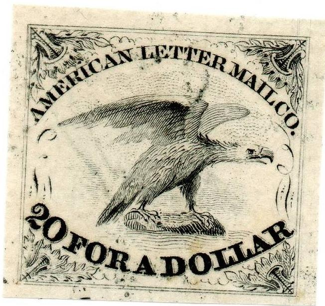
(Genuine stamps)
Return To Catalogue - United States locals overview - Adam's to American Express Company - D.O Blood & Co - United States
Note: on my website many of the
pictures can not be seen! They are of course present in the cd's;
contact me if you want to purchase the catalogue.
Adam's to American Express Company
American Letter Mail Co. Established in 1844 by Lysander Spooner and running to and from New York, Philadelphia and Boston.

(Genuine stamps)
The only genuine colour is black (see pictures above), this stamp was issued in 1844. I've also seen a genuine stamp with a red "PAID" cancel.
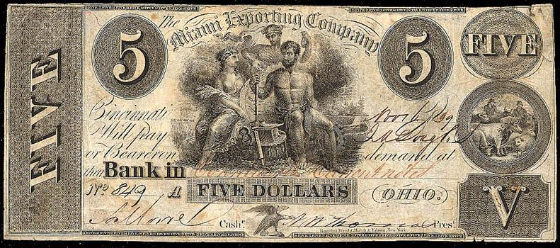
Reprints exist in various colours:
(exists in brown, orange, yellow, blue, green and red)
There are also forgeries of these stamps:
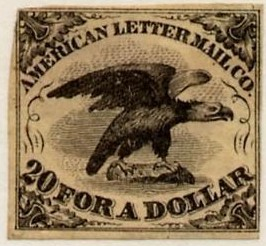
(Forgery!)
The above forgery has the '2' of '20' different, furthermore the tail of the eagle is not as pointed as in the genuine stamps. I have been told that this forgery was made by Thomas Woods (or Wood) for Hussey. I've also seen this forgery in the color green. Furthermore I've seen the above forgery with a cancel consisting of a pattern of red squares. I've also seen a red color forgery with a cancel consisting of an ellipse with horizontal lines.
Forgery; made from a photograph.
I've also seen a '1974 facsimile' (marked as such on the backside):
'Facsimile 1974'
Another very primitive forgery (or cut from a catalogue?). I've
also seen this forgery with a cancel consisting of 4 parallel
black bars.
A second type with inscription 'THE AMERICAN LETTER MAIL Co.' was also issued in 1844. This stamp was issued in black or blue:
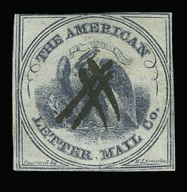
(Genuine)
(Genuine stamps, obtained from a Siegel auction)
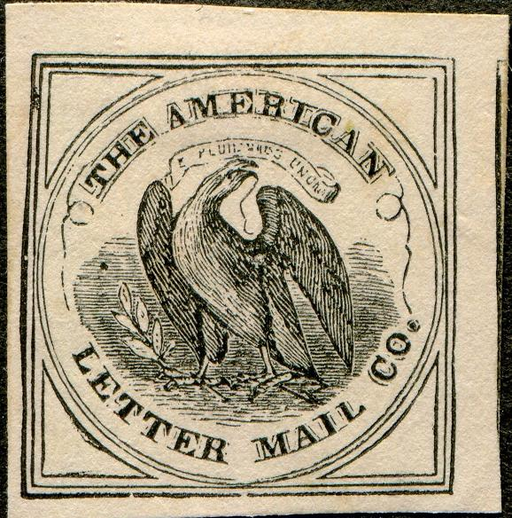
Forgery, the design is slightly different and the stamp doesn't
appear to be engraved. There is a worm in the eagle's mouth and
the text "Engraved by W.S. Ormsby" is missing at the
bottom.
Only two of these stamps are known to exist: one off cover and one on cover (according to a Siegel auction http://www.siegelauctions.com/1999/817/yf81773.htm#85 ). Images of both of them:
(genuine, image obtained from a Siegel auction)
(On cover, genuine, image obtained from a Siegel auction)
(Genuine, image obtained from a Siegel auction)
Issued in 1849, these stamps are very rare, the colour is black on pink.
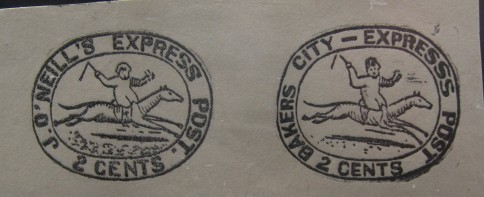
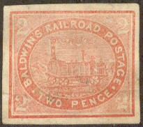
These labels are forgeries made by (or inspired by) Allan Taylor in or before 1865 with the help of Craig and Melvin (both stamp dealers in Canada). The train design exists in a number of colors (red, blue, brown, black) and on colored paper. A sub-type seems to have a blotch in the frameline next to the bottom left '2'. The design with 'PAID' in the ellipse seems also to exist in the colors 2 p black on red and 2 p black on green.
More pictures acan be found at: http://alphabetilately.com/US-trains-00.html.
The following text was found in the Stamp Collector's Monthly Magazine of 1866 (Vol.1, No. 10) of St.John, New Brunswick by George Steward Jr. concerning the Baldwin stamps:
A TIMBROPHILIC BUBBLE BURST!
STAMP COLLECTORS BEWARE!!
AN EXPOSE!!!
BALDWINS RAILROAD POSTAGE : an obsolete local of considerable
rarity"-as it is impudently termed by dealers interested in
its sale-is attracting some attention at present in Philatelic
Circles. Of course the venders of these stamps affirm stoutly
that they are genuine ; but we beg to assure buyers that this is
not the case. The "Baldwin" is a forgery and the Boston
dealer who now advertises it as genuine knows that it was made to
sell only. For the information of our readers we submit
a brief historical sketch-gleaned from authentic sources - of
this stamp.
In the month of May last two young gentlemen belonging to this
city entered into copartnership - which for distinction sake we
shall call Messrs "A. and B., Stamp and Coin dealers.'' They
had been in business but a short time when it occurred to them
that they might "get up" a stamp. Others had done so
with some degree of success, why could not they? Only represent
it to their correspondent as a genuine "local" issued
and used in the province of New Brunswick, and by its sale they
might easily replenish their coffers, and increase their business
many fold. Having hit upon this "happy thought " the
next thing wanted was a name and date. The latter was easily
settled ; it should be an obsolete local, for this would
sell best and be least liable to detection. But the name, -what
should it be? This was a puzzler ! It could not be "Turner's
" -or the " Eastern'' Express, for both of these
companies had agents in almost every city, town and village of
the Union, as well as in the British Provinces, an application to
either of whom might ''spoil their leetle game."
After much grave thought and consideration it was remembered that
a Mr. H. Baldwin had had some years before, an express office on
the European and North American Railway, which runs from St. John
to the Shediac oyster beds. Why not therefore call the
"obsolete local" BALDWIN'S RAILROAD POSTAGE
Nothing could be more favourable and the name was at once
adopted. After sketching a rough design of the projected
"obsolete," the honourable firm went next in
search of an engraver whom they soon found in the person of a Mr.
Gregory of this city. Mr. Gregory being an adept in his art soon
furnished a block or cut of the new stamp, which was taken to the
printing establishment of Messrs J. & A. McM..... of St.John,
and shortly after our enterprising young gents had the
satisfaction of gazing upon the fruit of their own ingenuity-or
in other words upon fifteen hundred of the "BALDWIN'S
RAILROAD POSTAGE LABELS" in the following colours: viz, red
on white, blue on ditto., black on ditto., red on grey, blue on
ditto, black on ditto, red on green, blue on ditto, black on
ditto, red on yellow, blue on ditto, black on ditto, red on blue,
blue on ditto., black on ditto. That such stamps should be
rare-very rare indeed- no one can doubt, for they could only be
had from the makers. We do not know that the manufacturers are to
blame altogether for saying that these stamps were of
"considerable rarity" -seeing they could only be
obtained from themselves, -but every honest man will say that
they were very much to blame for stating that they were NEW
BRUNSWICK LOCALS. But further, we have it on good authority, that
of these " gems, "four hundred were sold to S. Allan Taylor of Boston -
as stamps that never existed, but were issued to
sell only. Mr. Taylor knows all this, but does he denounce
the imposition? oh no! On the contrary, he tries to bolster it up
by "a change of base," and mendaciously says in his
paper, " that the New Brunswick to which these bogus
"obsolete locals'' belong is New Brunswick - New Jersey!!!
Could anything be more audacious? Can he tell us or his readers
when these TWO PENNY locals were issued and used
in New Jersey? and why it is that no mention is made in any of
the NewY ork Price Lists or American Catalogues of the U. S.
local stamps? We hope that our readers will make a note of what
we have said and avoid the Bogus " Baldwin's."
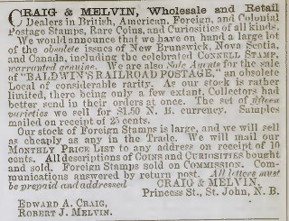
Most likely a forgery with different lettering.
(Reduced size, genuine, image obtained from a Siegel auction)
Genuine, image obtained from a Siegel auction. With MHB manual
inscription from Moses H Barnhard
A black on yellow and a red stamp were issued in 1845.
Issued in 1855 in the colours red and black on green. The black on green is the more common one.
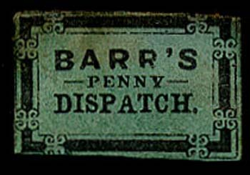
(Genuine stamps)
(Reduced size, genuine, image obtained from a Siegel auction)
Forgeries.
Forgery or reprint in the wrong color blue.
I presume the next design is a bogus issue for 'Barr's Penny Despatch Paid':
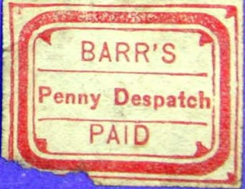
Barr's Penny Despatch Paid, I've also seen this stamp in black,
violet, blue and black on blue.
The Lancaster Club made some reprints of these stamps in 1935, example:
(Reduced sizes)
(Reduce size, image obtained from a Siegel auction)
This stamp was issued in 1883 in black.
I've seen this stamp in the color black on dark blue (probably a forgery).
(Genuine stamps, obtained from a Siegel auction)
Both stamps are printed in gold colour (probably issued somewhere in 1857-59). These stamps are extremely rare: only two of the 'New York' stamp exist and only 6 of the 'Madison Sq.' are known (see http://www.siegelauctions.com/1999/817/yf81782.htm#94 for more details).
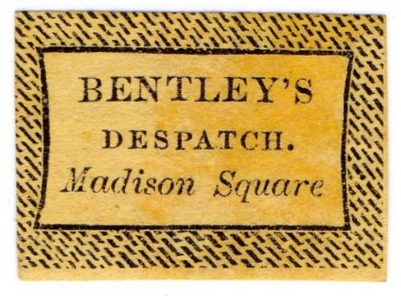
Forgery in a bogus design. All the above types are different:
"DISPATCH" vs. "DESPATCH", "Madison
Square" in italic or normal text and a dot behind
"Square" or not.
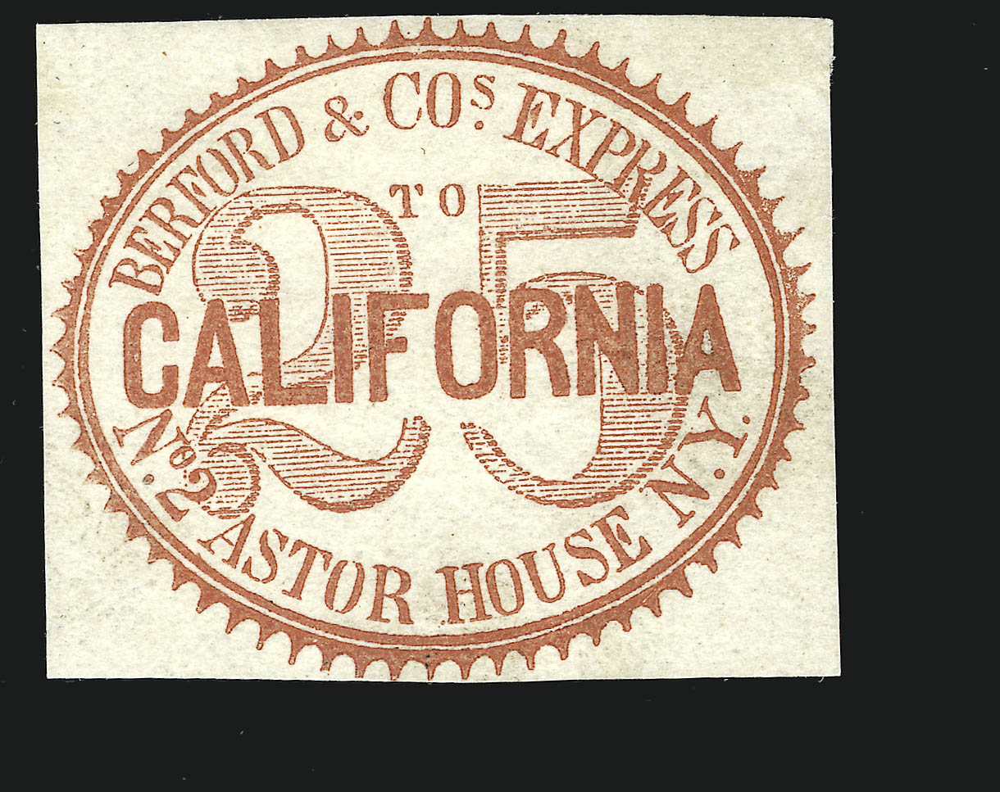
images obtained from a Siegel auction
Letter, image obtained from a Siegel auction.
(Reduced size)
3 c black 6 c green 10 c lilac 25 c red
At least one type of forgeries exists of the 3 c
and 25 c made by Casey (described in the
Lyon's book as forgery A). He offered them as reprints. The full
story about Casey's 'reprints' can be found in 'Philatelic
Forgers, their Lives and Works' by V.E.Tyler. After discovering
the truth and being exposed by S.Allan
Taylor, Casey was removed from his editorship of 'The
American Journal of Philately' by the publisher, J.W.Scott. It is amusing that both Taylor
and Scott are also listed in V.E.Tyler's book on philatelic
forgers..... The following text can be found in 'The United
States Locals' book by Coster on this matter:
"One original set of the Berford stamps is said to
exist, in the collection of an individual who, perhaps,
appreciating their rarity and desiring that the semblance of the
reality should be within the reach of all, caused
photo-lithographic " reproductions " to be made a
couple of years ago. These imitations (or "reprints" as
they were called by the individual already referred to) have been
fully ventilated in the columns of the Philatelic press."
In The Philatelic Journal by E.L.Pemberton of
January 20, 1875 the following text can be found:
Berford's Express.—This is the name of one of the very
oldest American Express Companies which issued stamps. A
description of one appears in 1865 in the following terms in the
S. CM. : " Large 10 in centre, to California printed over
it, Bedford & co.'s express above, n° 2 astor house, n. y.
below, with glory around." Bedford is an evident misprint
for Berford.
From that day till about a year ago no further information was
elicited concerning it, but Mr. J.
J. Casey, a.m., then editor of The American Journal
of Philately, stated in his own paper that he had
"found" a number in Mr. Berford's Scrapbook, and that
he had obtained possession of them ; then, with the untiring
energy of a true Philatelist, he "found the original stones
" of the Berford stamps, and straightway offered "
reprints " of four values right and left. The hard part of
this anecdote is, that Mr. J. J. Casey, a.m., took the designs of
these reprints to the New York Graphic Company, and they "
found the stones " for him ! And it appears that no original
stones exist, and it seems the Graphic Company executed a certain
number from the stones prepared by them, and then, in a
methodical and business-like manner, "cleaned" the
design off. No one would have known all this but for the kind
consideration of Mr. S. Allan
Taylor, who thus explains himself in a letter to The
Stamp Collector's Magazine for last December :
"When I saw the price lists of European dealers teeming with
these abominations, I thought it was worth my while to look up
the matter. No matter if I was a notorious swindler, and chief of
a ring of counterfeiters, et al, I was never accused of being a
fool, or of being readily imposed upon. So I went to work on the
Berford subject, and after a tedious and laborious investigation,
occupying and extending over a period of two months, I at last
discovered that the Berford locals were executed by the New York
Graphic Company from designs brought to them, and not from the
original stones, for none such exist."
Mr. Coster also has something to say ; for when this bubble
burst, he naturally wanted Mr. J. J. Casey to refund the cash
received by him for certain large lots sold to Mr. Coster. Then
the lively Casey says he sold them "as a practical joke of
the highest kind ! " Gratifying to Coster, and rather warm
for Casey. It appears that our wellbeloved Allan Taylor had about
the best of it. Let brotherly love continue.
A forgery in the wrong colour:
3 c in red and black! I've also seen this forgery in green. The
'R' of 'ASTOR' has a very short tail.
Highly dubious 6 c green stamp.
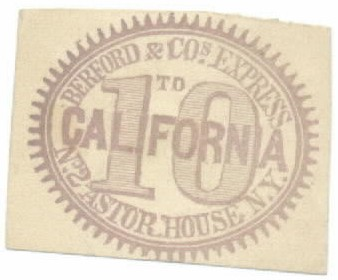
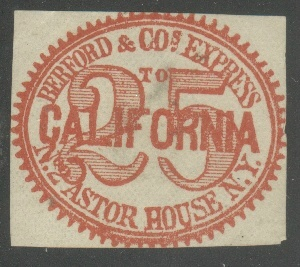
"SAN FRANSISCO" misspelling
"S" changed to "C" in "FRANSISCO",
also other re-engravings, for exmple the ground below the
bicycle.
Note the white diagonal lines across the design (probably
reprints)
Exists in brown as well as printed matter. More
information can be found on
http://www.rfrajola.com/fresno/fresno.pdf
They were issued during a railway strike and a bicycle service
was set up between Fresno and San Francisco by Arthur C. Banta.
The printer was Eugene Donze. The word "SAN FRANCISCO"
was initially in error as "SAN FRANSISCO" and this was
later corrected. The printer engaged in rather dubious practices
afterwards (he even defaced a fake die to prove that no more
stamps could be printed).
In 1935 a 're-run' was organized of the original bicycle post. The word "MAIL" was crossed out and the defaced stamps were used:
A jubilee card with a defaced stamp image in brown color was issued in 1944.
Some modern reproductions:
(Blue and red stamps, modern reproductions, reduced sizes)
(Genuine, image obtained from a Siegel auction)
This stamp was issued in 1888 and is very rare.
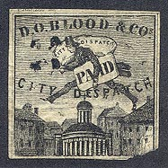
{kind=link}
{kind=link}
{kind=link}
{kind=link}
{kind=link}
{kind=link}